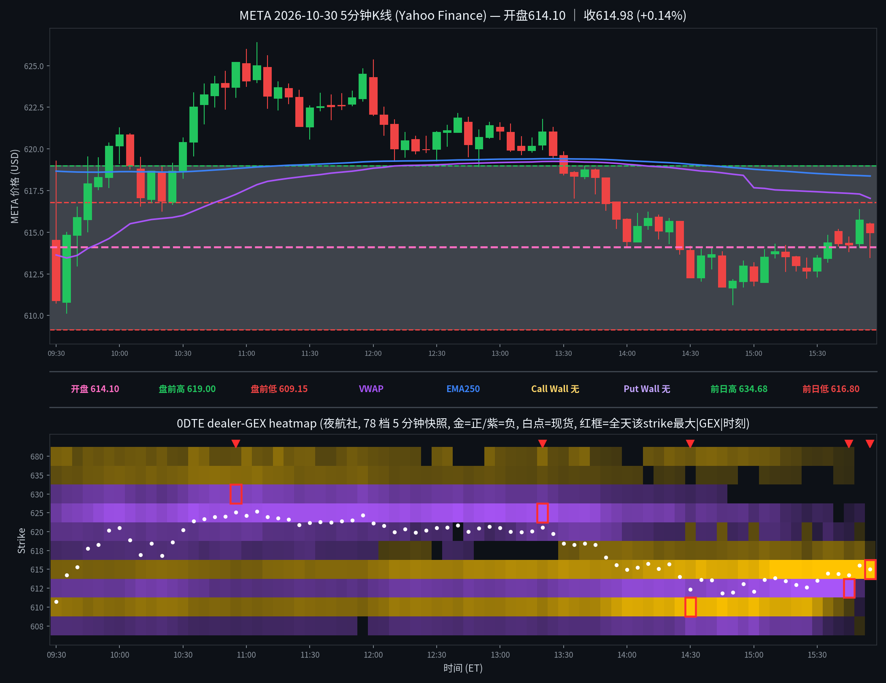

META 日内报告
2026年10月30日 · 周五 · 日内报告
早盘分析
（Junk-man 早盘简报未抓取到，留空待补）
（待补充 Junk-man 当日 #junkman-analysis 原文）
5 分钟 K 线 × 0DTE heatmap
0DTE（2026-10-30到期），夜航社 78 档 5 分钟快照；白点为每档现货位置

heatmap解读（0DTE（2026-10-30到期），夜航社 78 档 5 分钟快照）
GEX 地形图（0DTE（2026-10-30到期），夜航社 78 档 5 分钟快照）：金色=正 gamma 区（做市商对冲减速带/墙），紫色=负 gamma 区（加速带）。白点为每档现货位置。注意：15:55 终帧仅剩 615 一格 +946.7M，为 0DTE 到期残值；有效收盘结构以 15:30 帧为准。
- 金色带（15:30有效收盘帧）：615(+85.3M)/610(+30.2M)/617.5(+6.0M)；现价 ±5 点内 615 正节点与 612.5 负簇对冲
- 紫色带（15:30有效收盘帧）：612.5(-82.4M)/607.5(-6.1M)/625(-2.1M，已衰减)；上午主加速带 625 峰值 -65.1M@13:20，午后已释放
- 全天最大节点：615(+946.7M@15:55，到期残值；有效峰值 +233.8M@15:50)、612.5(-92.2M@15:45)、625(-65.1M@13:20)、610(+62.8M@14:30)、630(-33.6M@10:55)
- 结构特点：总 gamma 开盘 -27.0M → 10:55 最负 -96.0M → 14:10 翻正 (+7.5M) → 15:30 +30.7M → 15:50 +235.1M（615 钉住膨胀）；上午价格在负 gamma 加速结构中上行（610→626.37），午后随 625 负簇衰减回落、钉回 615 一带；收盘在 VWAP(617.03)下方、EMA250(618.37)下方
全天最大节点 TOP5
一、615（收盘钉住位，尾盘膨胀；15:55 值为到期残值）：全天变化——09:30 +7.0M → 11:00 +6.4M → 12:00 +12.9M → 13:00 +22.1M → 14:00 +24.8M → 15:00 +45.2M → 15:30 +85.3M → 15:50 +233.8M → 15:55 +946.7M（终帧仅剩 615 一格，其余 strike 均衰减至约 0，为 0DTE 到期残值，不作结构读数）；影响时段——午后价格回落至 612–615 一带后（14:30 起价格在 612–615 横盘）正值加速膨胀；影响方式——收盘钉住：价格终根收 614.98 贴在 615，615 正 gamma 尾盘膨胀为全天最强节点，属 0DTE 到期钉住，到期后失效，不作下周一支撑。
二、612.5（午后负簇，与 615 正节点对冲）：全天变化——09:30 -13.7M → 11:00 -8.7M → 13:00 -17.7M → 14:00 -42.4M → 15:00 -51.0M → 15:30 -82.4M → 15:45 -92.2M 峰值 → 15:50 -4.2M（骤释，到期残值阶段）；影响时段——午后价格跌至 612–615 区间后负值逐级加深；影响方式——价格夹在 615 正节点与 612.5 负簇之间窄幅磨（15:00–15:30 收盘 612.06–614.44），负簇未把价格拖破 610（610 正节点 +30.2M 承接），15:50 后随到期快速释放。
三、625（上午主加速带，午后衰减）：全天变化——09:30 -18.3M → 10:00 -51.6M → 11:00 -53.2M → 13:00 -59.2M → 13:20 -65.1M 峰值 → 14:00 -20.6M → 15:00 -5.2M → 15:30 -2.1M；影响时段——上午价格自 610 一路上行、10:55 首收 625.18 站上 625、11:05 见全天高 626.37；影响方式——上午加速带：价格在其下方时负值逐级加深助涨，价格站上 625 后负簇见顶，午后价格回落、负簇同步衰减，未形成上方压制（价格最高 626.37 仅略高于 625 即回落）。
四、610（午后下方承接）：全天变化——09:30 +14.7M → 11:00 +8.2M → 13:00 +15.7M → 14:00 +44.0M → 14:30 +62.8M 峰值（现货 612.32 在其上方约 2.3 点）→ 15:00 +55.9M → 15:50 约 0（到期残值）；影响时段——午后价格下探至 612 一带时（14:30–15:00 低 611.79–612.06）增厚为承接；影响方式——价格 14:30 后最低 612.06 未触及 610，610 正节点与 615 正节点夹住价格，午后低点不再下探，收盘 614.98。
五、630（上午次级加速带，未到达）：全天变化——09:30 -8.9M → 10:00 -21.3M → 10:55 -33.6M 峰值（现货 625.12 在其下方约 5 点）→ 12:00 -21.7M → 14:00 -3.6M → 14:45 -1.7M 后消失；影响时段——上午随价格上行加深，午后随价格回落快速释放；影响方式——价格最高 626.37 距其仍有约 3.6 点，从未到达 630，负值未兑现为向上加速到 630。
亮度口径：p99 截断做上限；红框 = 全天该 strike 最大 |GEX| 时刻；TOP5 排名以全天最大 |GEX| 为准（build_meta_day.py 输出一致）。615 的 15:55 峰值为到期残值，正文已注明。
资金流（0DTE到期2026-10-30，0笔；premium≥$20万｜size≥50｜DTE≤1｜side=B/M/A）
（当日无符合筛子的 flow 记录，或数据未拉取到）
原始 84 笔中 0 笔通过 DTE≤1：全部 84 笔 min_dte≥3（最近为 2026-11-02 周一到期 10 笔，min_dte=3；其余为 11-04/11-06/11-13/11-20/12-18 及 2027–2028 远期/LEAPS），且原始 84 笔中根本没有 2026-10-30 到期合约——当日 0DTE 大单（premium≥$20万且 size≥50）在 YHS flow 口径下为零，不是不存在小单，而是没有符合口径的大单。因此今日 flow 一句结论：无符合口径的 0DTE/1DTE 大单，方向读数缺失，不硬凑。原始 84 笔方向分布（仅作背景，不计入 verdict）：at_bid 51 笔 / at_ask 30 笔 / mid 3 笔；按到期看，2027-03-19 到期 21 笔最多（LEAPS 占主导），与事件日＋月末调仓背景一致。
分析总结
价格行为 × 0DTE GEX 结构复盘
① 开盘 614.10（官方），较昨收 624.54 低开 -1.67%（事件日：就业成本指数＋Chicago PMI＋XOM/CVX 财报＋隔夜 AMZN/SNDK/INTC gap＋月末周度到期）；全天 610.14–626.37，收 614.98（-1.53% vs 昨收；收开差 +0.88）。
② 白点轨迹：首根收 610.89（开盘即下探，09:35 低 610.14 为全天低，仍高于盘前低 609.15）→ 09:55 首收 620.16 站上盘前高 619.00 → 10:55 首收 625.18 站上 625 与昨收 624.54（缺口盘中回补）→ 11:05 高 626.37（全天高）→ 午后回落，13:30 收 618.45 跌回 620 下方 → 14:00 收 614.45 → 15:00 收 612.06 → 终根 15:55 收 614.98，重新跌回缺口下方。前日高 634.68 全天未触及；前日低 616.80 开盘即跌破、10:55 后才收复、午后再次跌破。
③ 结构：总 gamma 开盘 -27.0M → 10:55 最负 -96.0M（上午加速上行期）→ 14:10 翻正 → 15:30 +30.7M → 15:50 +235.1M（615 钉住膨胀）；上午价格在负 gamma 加速结构中上行，午后随 625 负簇衰减回落、钉回 615 一带——负 gamma 放大上午波动、正 gamma 钉住午后收盘。15:55 终帧仅剩 615 一格为到期残值，不作结构读数。
④ Junk-man 简报已核实缺席（见 junkman 字段）：当日仅有一条 07:20 MDT 综合批次消息，无独立 META 简报，墙位记 null；收盘算法关键位见明日预测（算法值，非简报墙）。
⑤ 收盘在 VWAP 下方（VWAP 617.03）/ EMA250 下方（EMA250 618.37）。
⑥ 资金流：当日无符合口径（premium≥$20万｜size≥50｜DTE≤1）的大单，方向读数缺失（见资金流 verdict）。
K线=Yahoo Finance 5分钟；heatmap=夜航社 dealer-GEX 5分钟快照；heatmap亮度=平方根连续渐变（p99裁剪）。
收盘后的静态快照；页面不在打开时更新行情。